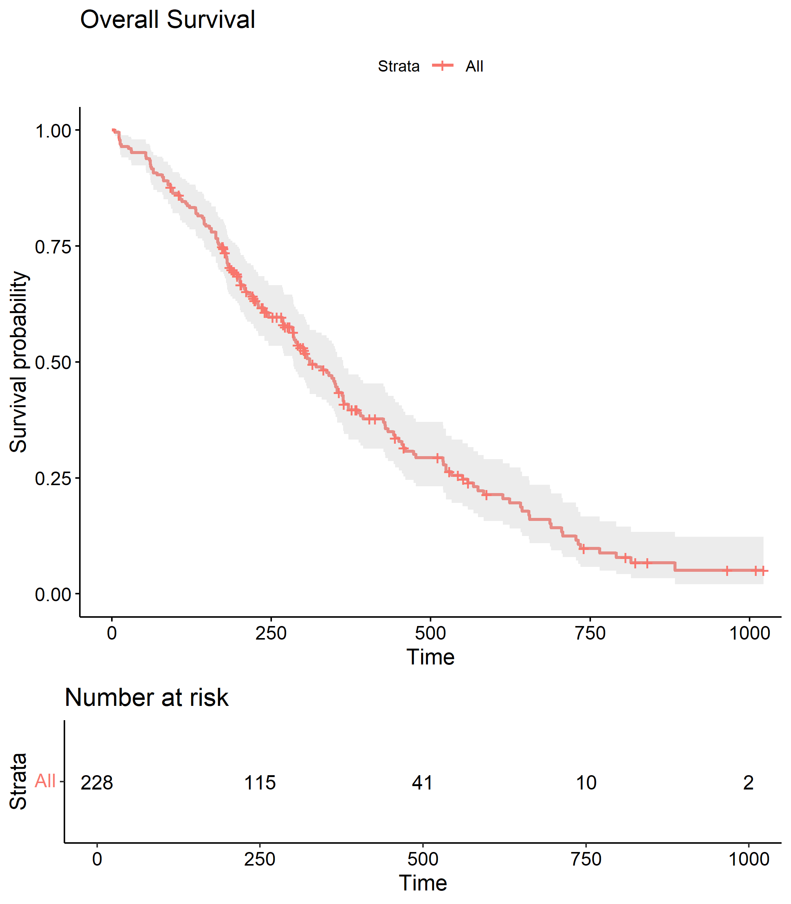
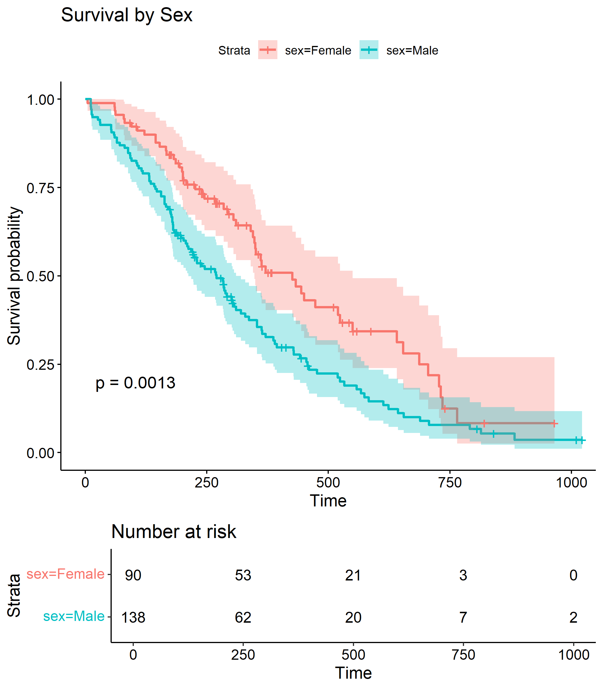
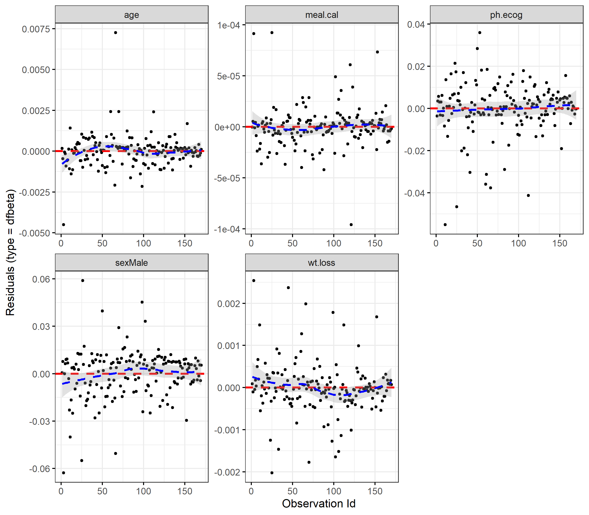

Immunization Information System Data Quality Audit
This project applies classical biostatistical survival analysis methods to examine factors associated with time to death among patients with advanced lung cancer. The analysis focuses on right-censored time-to-event data and demonstrates the use of Kaplan–Meier estimation, Cox proportional hazards modeling, and model diagnostics.
The analysis uses the lung dataset from the survival R package,
which includes demographic and clinical information on patients with advanced lung cancer.
Overall survival was defined as time from study entry to death, with patients censored
if death was not observed during follow-up.
Survival patterns were explored using Kaplan–Meier curves, and associations between covariates and mortality risk were evaluated using multivariable Cox proportional hazards models. Model assumptions were formally assessed using Schoenfeld residuals and graphical diagnostics.



This project demonstrates the application of standard survival analysis techniques commonly used in biostatistics and clinical research. Results highlight the importance of functional status and sex as predictors of mortality in lung cancer patients, while illustrating best practices in model diagnostics and sensitivity analysis.
Full code, analysis, and documentation available on GitHub here. Includes Jupyter notebook with complete analysis pipeline, README with detailed methodology, and generated performance reports.
Immunization Information System Data Quality Audit

Risk-Adjusted Portfolio Optimization and Stability Analysis

Cardiovascular Risk Profiles Among Female Patients